Sticky
Fingers
Brand revitalization, UX/UI, and e-commerce redesign for a Charleston barbecue institution.

Brand revitalization, UX/UI, and e-commerce redesign for a Charleston barbecue institution.
Sticky Fingers Ribhouse is a Charleston institution. Founded in 1992 by three high school friends — Chad Walldorf, Jeff Goldstein, and Todd Eischeid — who moved from Chattanooga to the Lowcountry with nothing but a family rib recipe and a belief that Charleston needed Memphis-style hickory-smoked barbecue, Sticky Fingers grew from a single location on Johnnie Dodds Boulevard in Mount Pleasant into a beloved regional chain with 16 restaurants across five southeastern states.
But years of ownership changes after the founders' departure had taken a toll. The brand had drifted. The look was dated, the website was outdated, and the visual identity no longer reflected the authenticity and Southern soul that made Sticky Fingers great in the first place. When the founders returned to reclaim and revitalize the brand, they called on me to help bring it back to life — strategically, visually, and digitally.
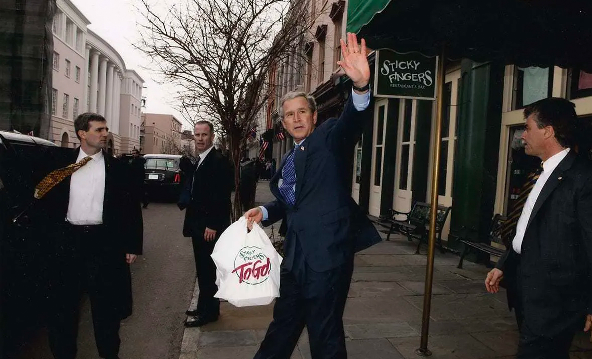
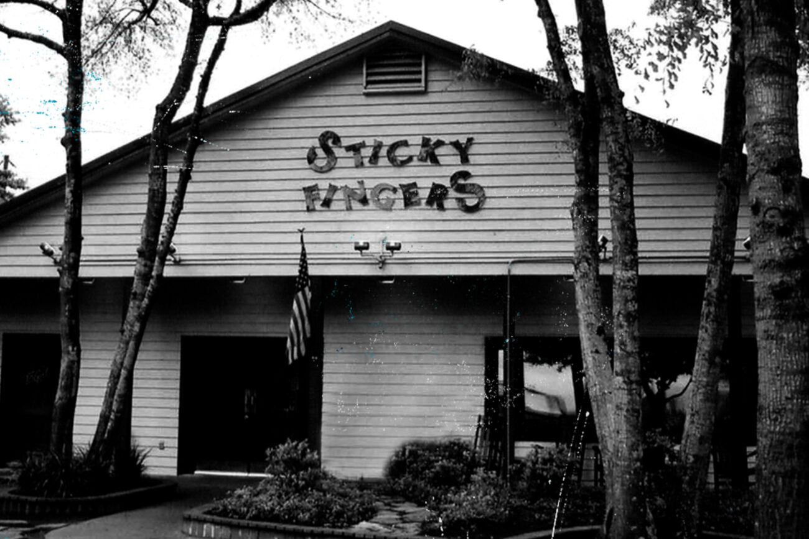
Rebranding a restaurant is different from building one from scratch. When a brand already has equity — when people grew up eating there, when the name carries real nostalgia — the work isn't about inventing something new. It's about excavating what made the brand great, removing everything that drifted away from it, and rebuilding with honesty and intention. That's a harder assignment than starting with a blank canvas.
Sticky Fingers had allowed years of inconsistent ownership to erode its identity. The imagery on the website was generic and uninspiring. The headlines were flat. The menus had lost their personality. The digital presence didn't reflect the warmth, humor, and genuine Southern hospitality that lived in the restaurants themselves. There was no e-commerce functionality — no way to sell the signature sauces that were already on grocery shelves nationwide, no to-go ordering, no way to extend the brand relationship beyond the dining room.
Before any creative work began, I went deep on what actually made Sticky Fingers special. The answer wasn't the sauce — though the sauce is legitimately great. It wasn't just the food. It was an authenticity that came from true Southern roots: the commitment to cooking Memphis-style hickory-smoked barbecue the right way, low and slow, and a genuine hospitality that you can't manufacture or franchise your way into.
From that foundation, I worked with the Sticky Fingers team to build a smart, strategic creative brief. The single differentiating brand idea we landed on was this: Sticky Fingers has the food you love and the experience you crave.
One of the most enjoyable parts of this project was developing the brand voice — the personality behind the words. Sticky Fingers is a brand that can get away with things most brands can't. It has enough history, enough charm, and enough Southern irreverence to say something like '#Cuegasm' on social media and have it land perfectly. That's a voice built on genuine confidence, not manufactured edginess.
With a suite of tagline options that reflected that voice across different contexts and campaign needs: 'For the love of awesome sauce.' 'Let's get this pork party started.' 'Sweet tea wishes and barbecue dreams.' Each one carried the warmth, humor, and unmistakable Southern spirit that is Sticky Fingers at its best.
"Not every brand can work #Cuegasm into a social media post, but I'm sure glad I got to work with one that can."
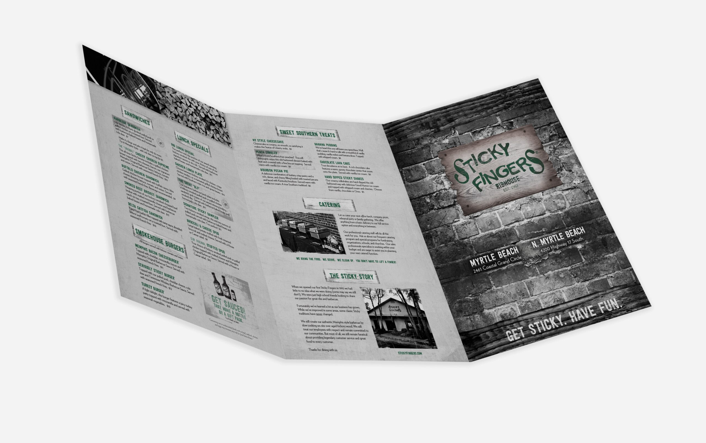
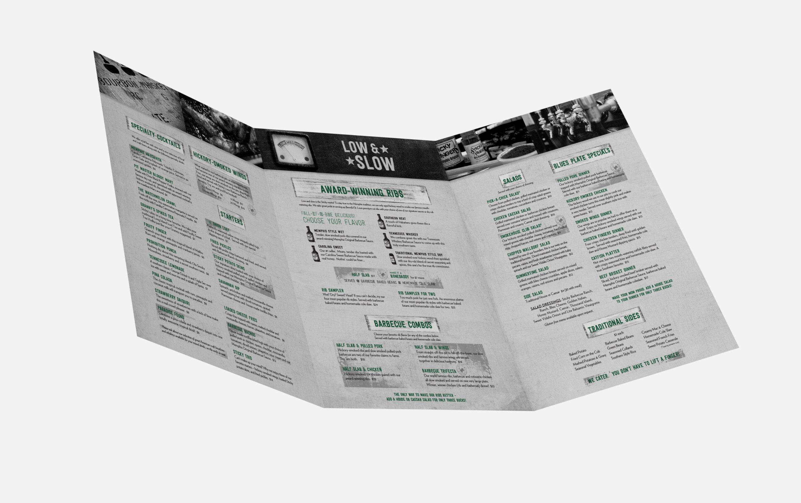
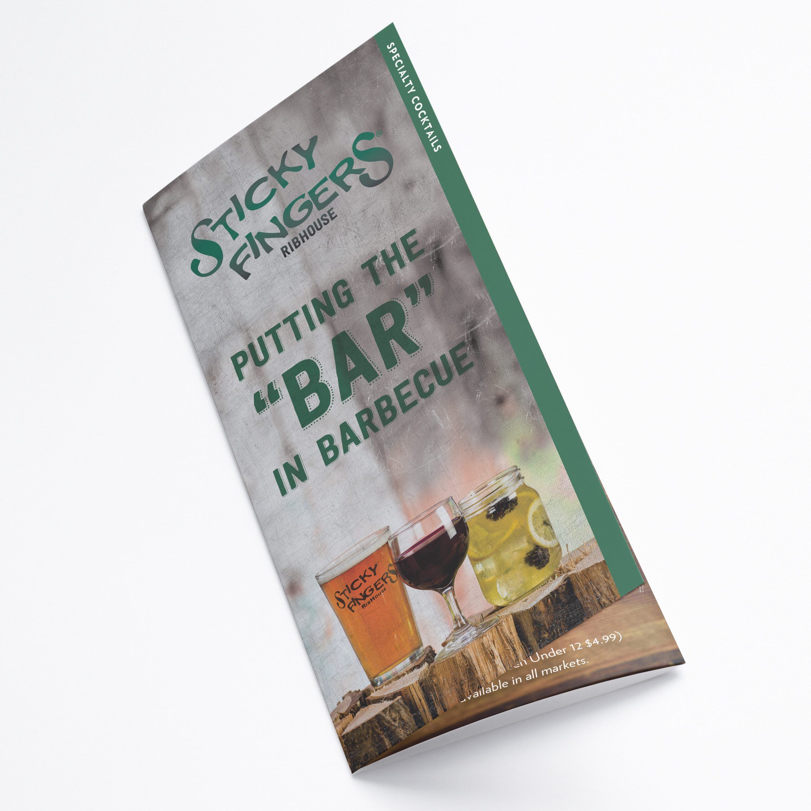
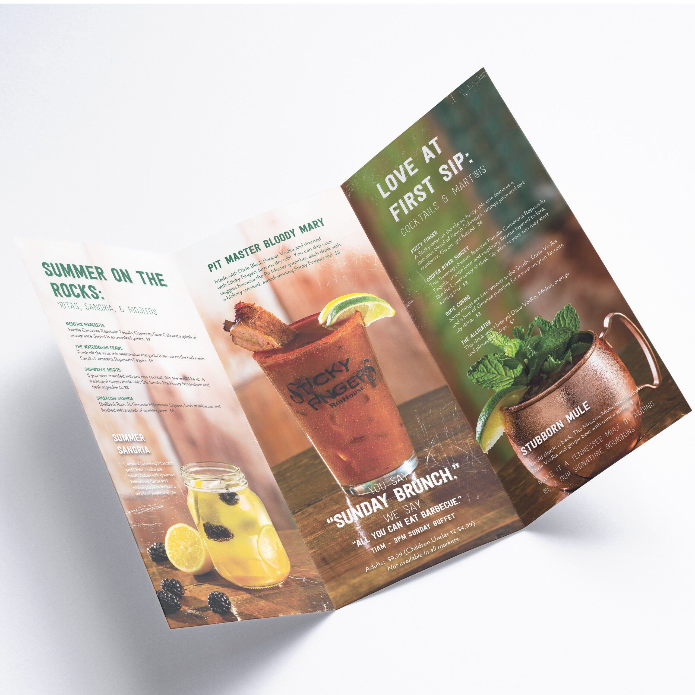
The website rebuild was the centerpiece of the digital transformation. The old site was not mobile-optimized, had no e-commerce capability, and no online to-go ordering — a significant revenue gap in an era when digital ordering was already becoming an expectation, not a luxury.
I designed and built a fully responsive site that worked seamlessly across desktop and mobile, with the brand's new visual identity applied consistently throughout. The UX decisions were driven by understanding how Sticky Fingers' customers actually use a restaurant website. They want to see the menu fast, find a location, and order with minimal friction. I designed the information architecture around those priorities — clear navigation, prominent calls-to-action, and a to-go ordering flow that was intuitive from landing page to checkout.
Adding e-commerce was a strategic priority. Sticky Fingers' bottled sauces were already in approximately 4,000 grocery stores nationwide at their peak — there was clearly demand for the product beyond the restaurant walls. Building a direct-to-consumer channel on the website meant Sticky Fingers could capture that revenue, build a direct relationship with customers across the country, and extend the brand into homes far beyond the Southeast.
I built out the full e-commerce functionality covering sauce sales, branded merchandise, and apparel alongside the online to-go ordering system for local customers. The checkout experience was designed to match the warmth and simplicity of the brand — nothing clinical or transactional, just easy and enjoyable.
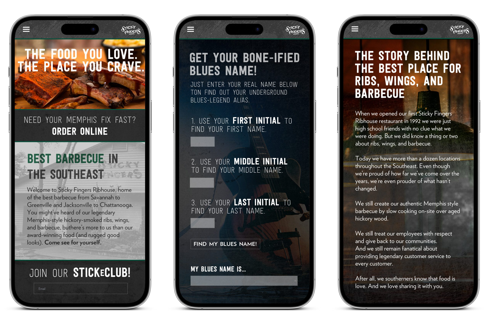
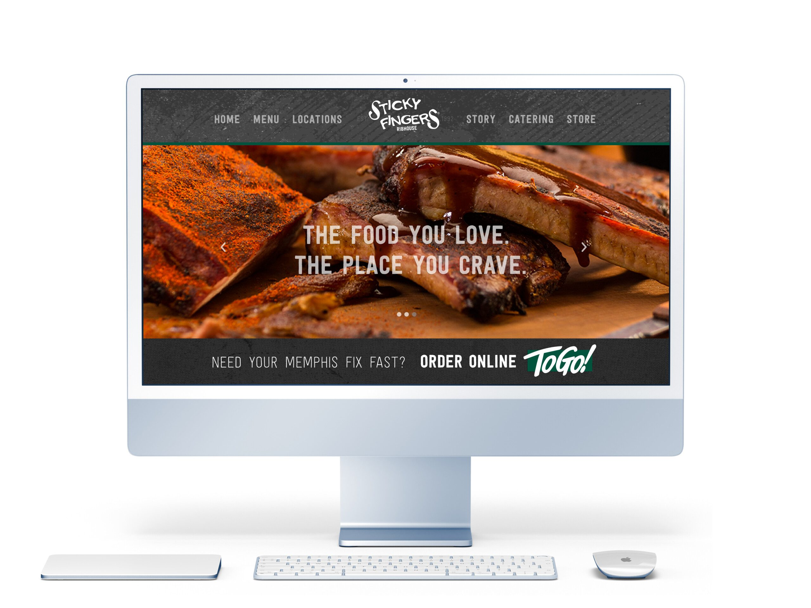
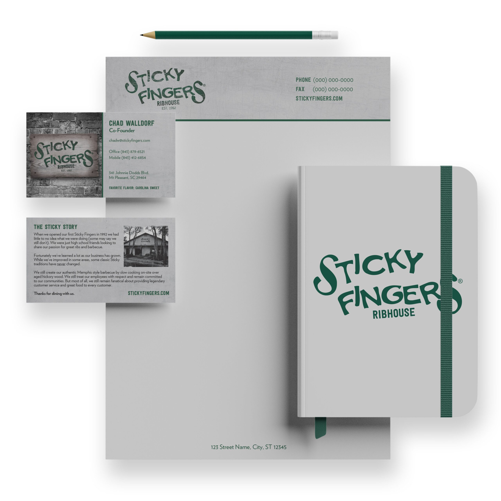
The t-shirt designs were a critical part of restoring Sticky Fingers' cultural credibility. A restaurant brand's merch is a statement about how people feel about the place — you only wear a restaurant's shirt if you're genuinely proud to rep it. I designed a range of apparel that had real personality: bold graphics, strong typography, designs that leaned into the brand's Southern barbecue roots with the kind of confidence that only 30-plus years of history can give you.
Beyond apparel, I designed a full suite of brand collateral including business cards and promotional materials — all built on the new visual system to ensure that every physical touchpoint reinforced the same brand identity as the digital one.
The rebrand gave Sticky Fingers a visual and strategic foundation worthy of its history. The new identity stripped away years of brand drift and replaced it with something that felt honest, Southern, and genuinely appetizing — a look and voice that the restaurants themselves could be proud of and that customers could reconnect with.
The website launched with full e-commerce and to-go ordering capabilities that hadn't existed before, opening new revenue channels and extending the brand's reach beyond the dining room.
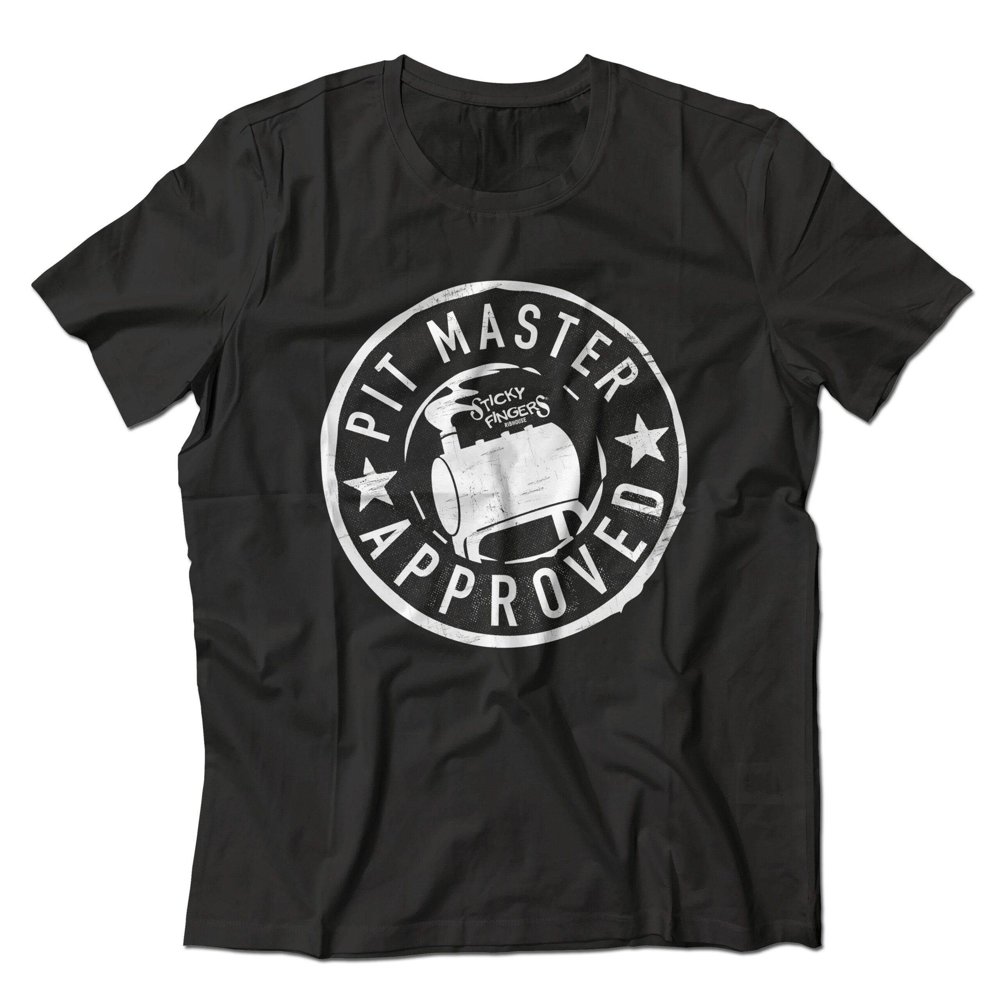
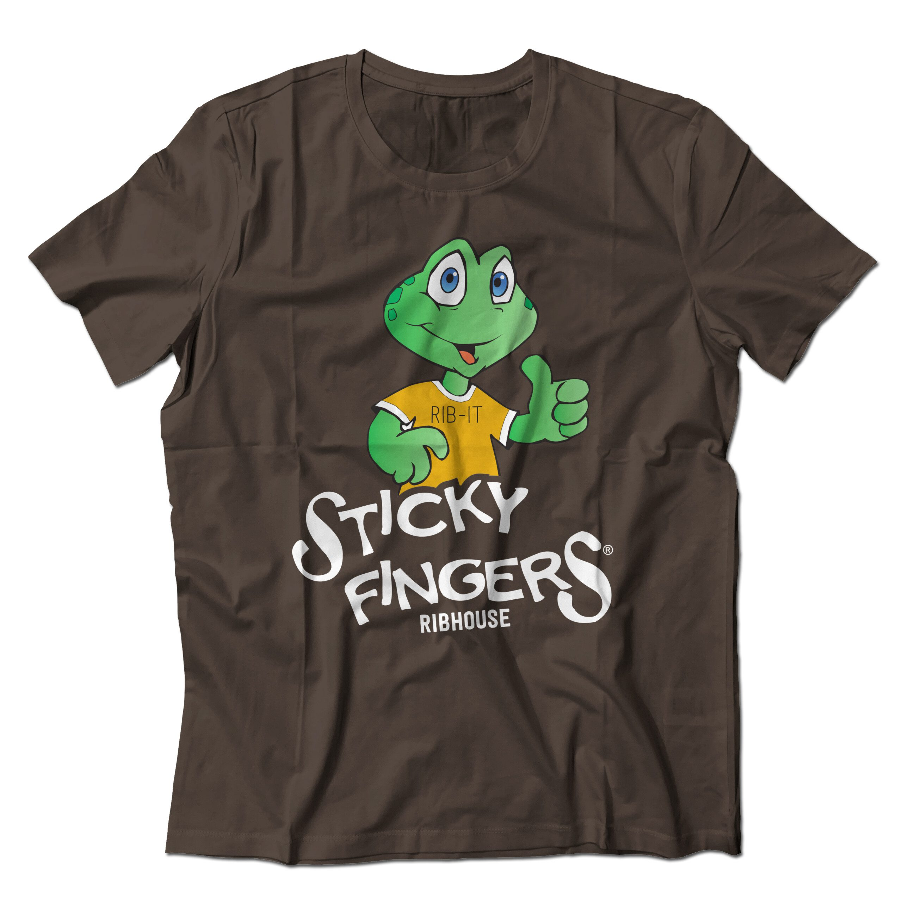
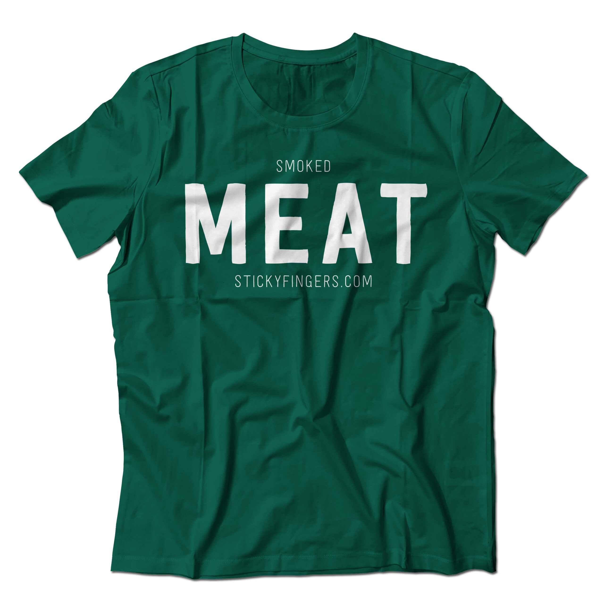
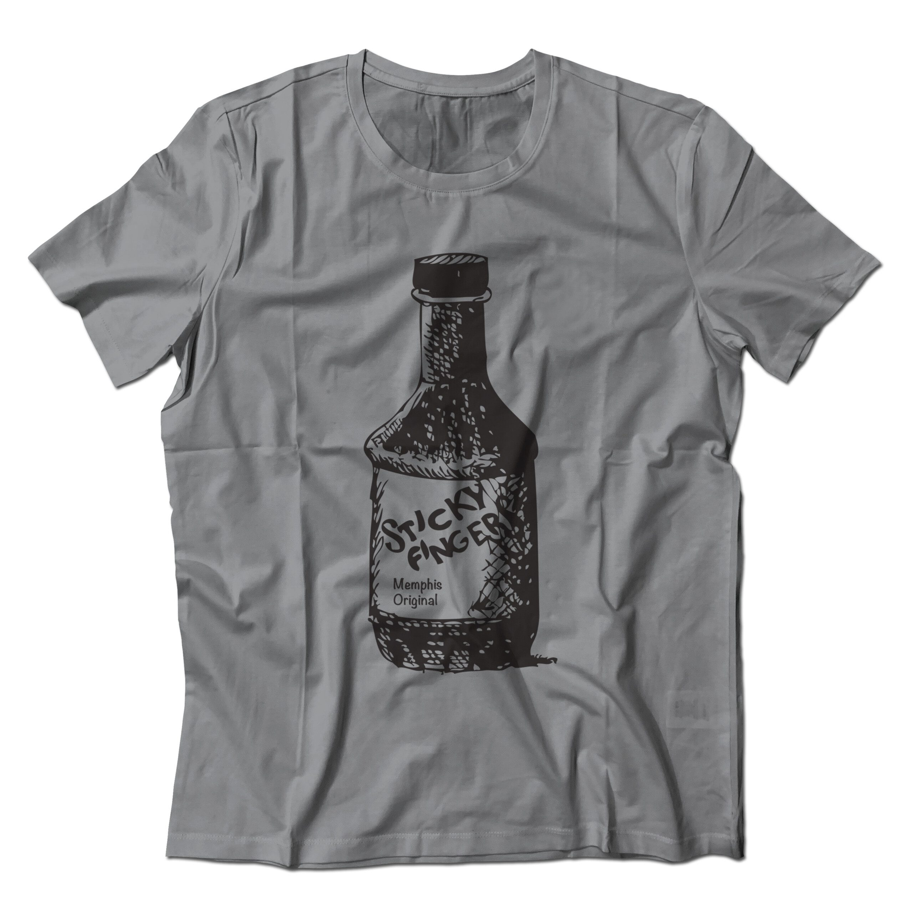
"I had the pleasure of working directly with Kevin on multiple projects over several years at Sticky Fingers. I found him to be highly creative and very easy-going and his work was always of the best quality. I am confident that Kevin would make a great addition to any creative team."